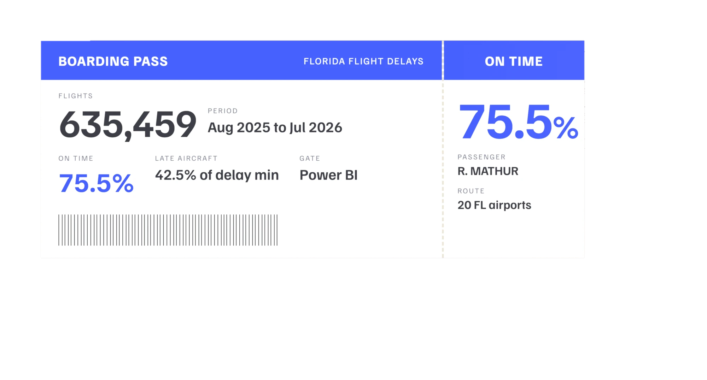

1 of 4, Business intelligence
Florida Flight Delays
75.5%
On-time departures, 635,459 flights, Aug 2025 to Jul 2026
Time of day matters about twice as much as the airline; late-arriving aircraft cause 42.5% of delay minutes.

What I did
Solo project. I built the star schema (635,459 flights, four dimensions), the DAX measures with a whole-Florida benchmark, the Power BI report, and a pandas script that recomputes every card to test it.
Built with
- Power BI
- DAX
- Star schema
- Python
- pandas
- Chart.js